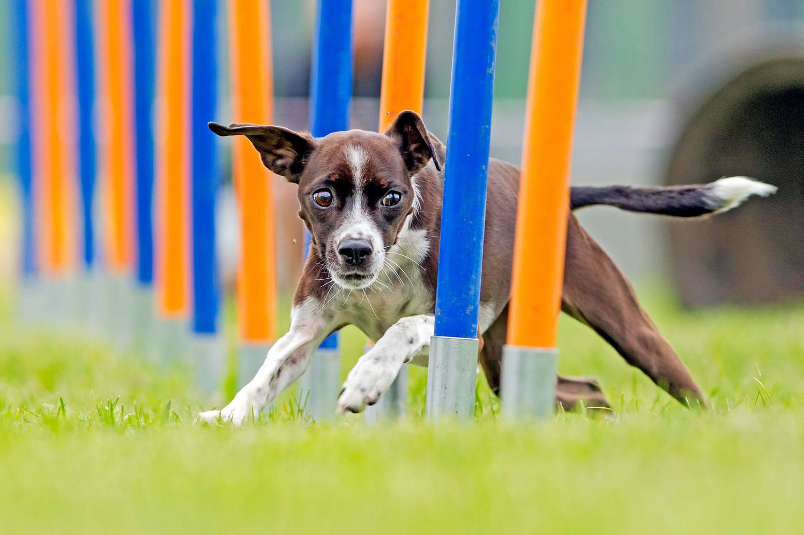
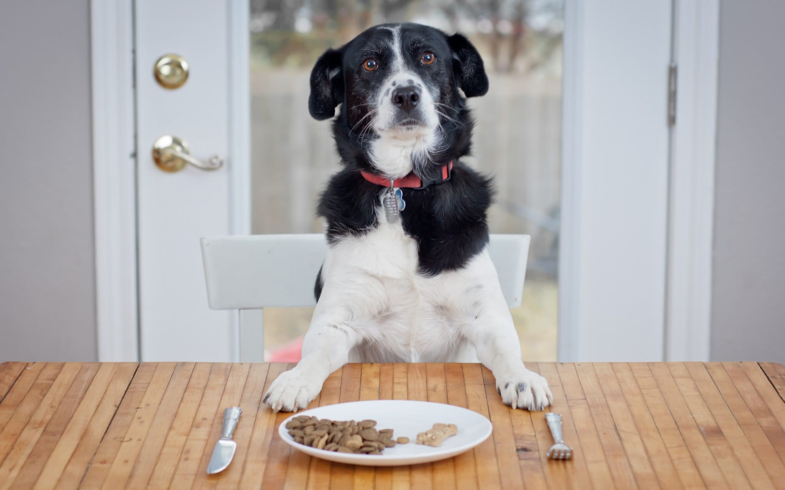

Why Pet Shows Are Important
Pet shows are not only fun events for pet owners and enthusiasts but also serve several important purposes. They provide a platform for showcasing the talents and unique qualities of different pets, promoting responsible pet ownership, and fostering a sense of community among pet lovers.
Moreover, pet shows encourage socialization and bonding between pets and their owners, helping to strengthen the human-animal bond. They also raise awareness about various pet-related issues such as pet health, nutrition, and welfare.

The Importance of Good Food for Pets
Proper nutrition is essential for the health and well-being of pets. Just like humans, pets require a balanced diet consisting of proteins, carbohydrates, fats, vitamins, and minerals to thrive. Good-quality pet food provides all the necessary nutrients in the right proportions to support their growth, energy levels, and overall health.
Feeding your pet high-quality food helps prevent nutritional deficiencies, obesity, and other health problems. It also contributes to a shiny coat, strong teeth, and better digestion. Remember to consult with your veterinarian to choose the best diet for your pet based on their age, breed, size, and specific health needs.
